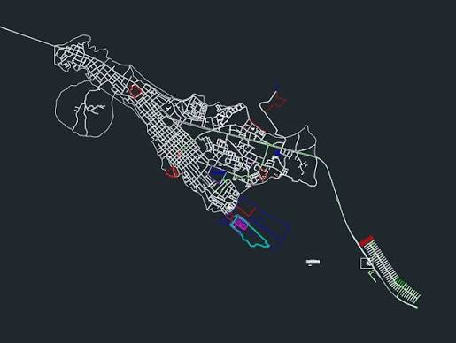

Barinitas, nestled at the foot of the Venezuelan Andes in Barinas state, holds a truly special place in my heart as my cherished birthplace, celebrated for its lush greenery, refreshing mountain climate, and captivating natural landscapes. At the heart of its scenic charm lies Moromoy Park (Parque Moromoy), a famous natural sanctuary filled with towering eucalyptus trees, expansive green areas, and vibrant biodiversity that invite visitors to relax and connect with nature. The town serves as a peaceful gateway where dense forests meet crystal-clear rivers, making it a serene retreat for travelers seeking outdoor escape and tranquil beauty.
Beyond the park, the region surrounding Barinitas is home to exhilarating eco-tourism destinations and breathtaking aquatic sights. Adventurers are drawn to its magnificent waterfalls (cataratas), such as El Santo del Cascarón , as well as the refreshing natural pools along the Santo Domingo and La Yuca rivers, which offer perfect spots for swimming and white-water rafting. With its combination of forest trails, cascading waters, and panoramic mountain views, Barinitas stands out as my favorite place and a vibrant jewel of the Andean foothills.
